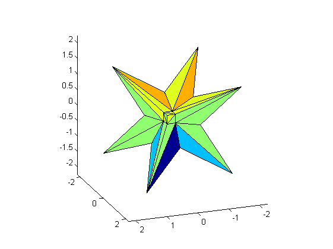

DEMOACCSUMDOT A little demonstration of accurate summation and dot products
Contents
Accurate summation
Recently I published various algorithms for the accurate computation of sums and dot products. A typical application is the accurate computation of a residual.
First we define an ill-conditioned matrix, the inverse Hilbert matrix as provided by Matlab (we display only the upper left corner of A):
format short
n = 10;
A = invhilb(n);
v = 1:4;
A(v,v)
cond(A)
ans =
1.0e+009 *
0.0000 -0.0000 0.0001 -0.0006
-0.0000 0.0003 -0.0059 0.0476
0.0001 -0.0059 0.1129 -0.9514
-0.0006 0.0476 -0.9514 8.2450
ans =
1.6028e+013
We calculate a right hand side such that the solution is the vector of 1's. Since the matrix entries are not too large integers, the true solution is indeed the vector of 1's.
The approximate solution by the built-in Matlab routine is moderately accurate, as expected by the condition number of the matrix.
b = A*ones(n,1); xs = A\b
xs =
0.9999
0.9999
1.0000
1.0000
1.0000
1.0000
1.0000
1.0000
1.0000
1.0000
Residual iteration
If a residual iteration is performed in working precision, the result becomes backward stable; however, the forward error does not improve. We display the result after five iterations.
for i=1:5 xs = xs - A\(A*xs-b); end xs
xs =
1.0000
1.0000
1.0000
1.0000
1.0000
1.0000
1.0000
1.0000
1.0000
1.0000
Accurate residual iteration
This changes dramatically when calculating the residual in double the working precision.
format long
xs = xs - A\Dot_(A,xs,-1,b)
xs = 1.000000000169164 1.000000000146067 1.000000000128524 1.000000000114745 1.000000000103633 1.000000000094483 1.000000000086817 1.000000000080302 1.000000000074695 1.000000000069820
As expected, the accuracy increases. After four iterations the approximation is full accuracy.
for i=1:3 xs = xs - A\Dot_(A,xs,-1,b); end xs
xs =
1
1
1
1
1
1
1
1
1
1
Note that the residual is calculated "as in" double the working precision, but the result is stored in working precision.
Verified inclusion
The same principle is used in the verification routine verifylss. There is a choice how to calculate the residual:
intvalinit('ImprovedResidual')
X1 = verifylss(A,b)
===> Improved residual calculation in verifylss intval X1 = [ 0.99999999603367, 1.00000000310752] [ 0.99999999654799, 1.00000000271455] [ 0.99999999694173, 1.00000000241196] [ 0.99999999725369, 1.00000000217103] [ 0.99999999750753, 1.00000000197410] [ 0.99999999771822, 1.00000000181007] [ 0.99999999789532, 1.00000000167191] [ 0.99999999804697, 1.00000000155325] [ 0.99999999817804, 1.00000000145049] [ 0.99999999829254, 1.00000000136056]
A heuristic is used to improved the accuracy. It is fast, but not necessarily accurate ("poor men's residual"). Calculating the residual as above is slower but more accurate:
intvalinit('QuadrupleResidual')
X2 = verifylss(A,b)
===> Quadruple precision residual calculation by Dot_ in verifylss intval X2 = [ 0.99999999999999, 1.00000000000001] [ 0.99999999999999, 1.00000000000001] [ 0.99999999999999, 1.00000000000001] [ 0.99999999999999, 1.00000000000001] [ 0.99999999999999, 1.00000000000001] [ 0.99999999999999, 1.00000000000001] [ 0.99999999999999, 1.00000000000001] [ 0.99999999999999, 1.00000000000001] [ 0.99999999999999, 1.00000000000001] [ 0.99999999999999, 1.00000000000001]
Very ill-conditioned matrices
Next we use an extremely ill-conditioned matrix proposed by Boothroyd (we show some entries of the upper left corner). As before the right hand side is computed such that the exact solution is the vector of all 1's.
n = 15; [A,Ainv] = Boothroyd(n); A(v,v) b = A*ones(n,1);
ans =
15 105 455 1365
120 1120 5460 17472
680 7140 37128 123760
3060 34272 185640 636480
Since the inverse is the original matrix with a checkerboard sign distribution and thus explicitly known, we can safely compute the condition number.
format short
cnd = norm(A)*norm(Ainv)
cnd = 1.5132e+023
As expected, the Matlab approximation has no correct digit, even the sign is not correct.
xs = A\b
xs =
1.0000
1.0001
0.9996
1.0011
0.9984
0.9989
1.0150
0.9450
1.1374
0.7513
1.2499
1.3594
-1.9567
11.8329
-30.1415
Using accurate dot products based on error-free transformations, an inclusion of the solution can be calculated:
format long _ X = verifylss(A,b,'illco')
intval X = 1.00000000000000 1.00000000000000 1.00000000000000 1.0000000000000_ 1.0000000000000_ 1.000000000000__ 1.000000000000__ 1.00000000000___ 1.00000000000___ 1.0000000000____ 1.0000000000____ 1.0000000000____ 1.000000000_____ 1.000000000_____ 1.000000000_____
Extremely ill-conditioned sums and dot products
There are routines to generate extremely ill-conditioned sums and dot products. Consider
n = 50; cnd = 1e25; [x,y,c] = gendot(n,cnd);
Computation "as if" in K-fold precision
Vectors x and y of length n are generated such the condition number of the dot product is cnd=1e25 and the true value of x'*y is c. Therefore it can be expected that a floating-point approximation has no correct digit, in fact true result and approximation differ significantly in magnitude:
c x'*y
c =
0.335225272293499
ans =
7.516192768000000e+009
The computation of x'*y in double the working precision gives a more accurate approximation:
c dot_(x',y)
c = 0.335225272293499 ans = 0.335225343704224
A result "as if" computed in triple the working precision and rounded into working precision is accurate to the last bit:
c dot_(x',y,3)
c = 0.335225272293499 ans = 0.335225272293499
Accurate approximation
An alternative is to use error-free transformation to compute an accurate result, independent of the condition number. For an extremely ill-conditioned dot product with condition number 1e100 the result is still accurate to the last bit.
n = 50; cnd = 1e100; [x,y,c] = gendot(n,cnd); c accdot(x',y)
c = -0.231323371961341 ans = -0.231323371961341
An inclusion of the result can be computed as well:
c infsup(accdot(x',y,[]))
c = -0.231323371961341 intval = [ -0.23132337196135, -0.23132337196134]
Hidden line
There is quite some effort in computer geometry to design properly working hidden line algorithms. Of course, the decision whether a point is visible or not is simply decided by the sign of some dot product. It seems hard to believe, but evaluating dot products in double precision is sometimes not enough to make the right decision. In that case an accurate dot product may help.
The following graph shows the solution set of an interval linear system as on the cover of Arnold's book. When executing this in Matlab and rotating the graph, sometimes the display is not correct.
format short
A = ones(3)*infsup(0,2); A(1:4:end) = 3.5
b = ones(3,1)*infsup(-1,1)
plotlinsol(A,b)
view(-200,20)
intval A = [ 3.5000, 3.5000] [ 0.0000, 2.0000] [ 0.0000, 2.0000] [ 0.0000, 2.0000] [ 3.5000, 3.5000] [ 0.0000, 2.0000] [ 0.0000, 2.0000] [ 0.0000, 2.0000] [ 3.5000, 3.5000] intval b = [ -1.0000, 1.0000] [ -1.0000, 1.0000] [ -1.0000, 1.0000] intval ans = [ -1.7648, 1.7648] [ -1.7648, 1.7648] [ -1.7648, 1.7648]
Enjoy INTLAB
INTLAB was designed and written by S.M. Rump, head of the Institute for Reliable Computing, Hamburg University of Technology. Suggestions are always welcome to rump (at) tuhh.de